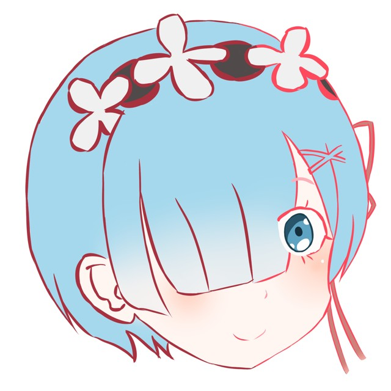

 OO Studio
Go
Home
Anatomy
Animal
Architecture
Character
Food & Drink
Interior Design
Plants
Robot
Vehicle
Stylized model of Ikeda Tsuneoki (池田 恒興)
Daimyo Style:
oda
saito
tokugawa
Add To Cart
Pull On closure
Hand Wash Only
The high neck design and see-through mesh splicing design, which makes an eye-catching statement and shows the luxury
look. Very unique and fashionable.Neck halter and criss-cross back ties will be perfect for adjusting it as your torso,
which is compatible with any kinds of shapes.
The light removable padding cups for breast support and they can easily be removed on both sides, no underwire.
Vintage style with ruched design, which makes tummy control and shows your slim figure and fantastic look. Sexy and
fashion style fit for all kinds of activities : party, beach, holiday, swimming pool etc .
The medium coverage bottom, which is with a sensual touch that make your legs look impossibly long, while confidence to
show your shape curves and buttocks.
Exclusive fabric: 80% polyamide, 20% spandex. Skin-friendly, breathable, soft, quick drying and deodorant. Double-lined
fabric is more strength, lightweight enough. Hand wash in cold water, dry in shade only. Do not bleach、fold or iron.